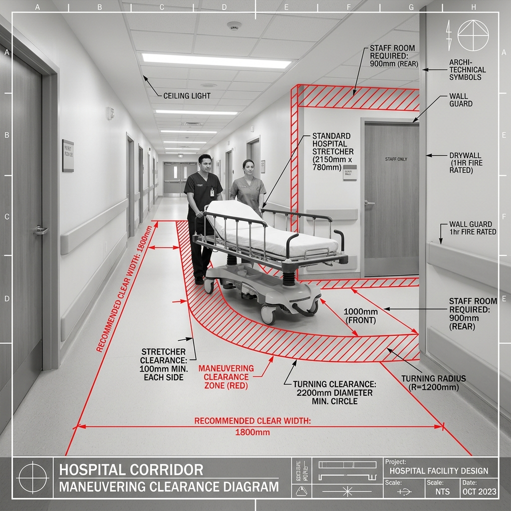
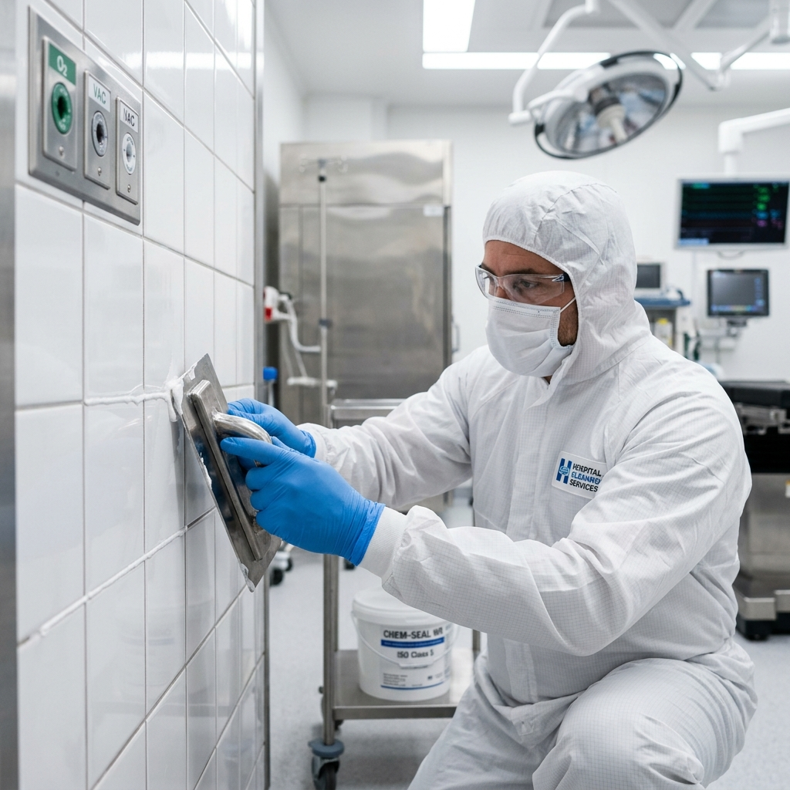

📅 Lesson Info
- Date: 2026-06-25
- Topic: Technical Comparisons, Intensifiers & Spatial Specifications
1. Pre-Teaching & Review
Review (Aula 41)
- Lead-lining (revestimento de chumbo):
- Ex: The oncology wing requires proper lead-lining to pass the inspection.
- Shielding (blindagem contra radiação/impacto):
- Ex: The radiation shielding in the X-Ray room was certified yesterday.
- Snags (pequenas imperfeições/arremates):
- Ex: We found a few snags on the drywall that need quick fixing.
- Punch list (lista de pendências para entrega):
- Ex: The contractor promised to finish the punch list before Friday morning.
- Outlet (tomada elétrica):
- Ex: Make sure the electrician installs another outlet near the desk.
New Vocabulary & Context
- Clearance (folga, espaço livre de manobra):
- Definition: The clear space allowed for a person, vehicle, or stretcher to pass through, or the minimum distance between two structures.
- Ex: We need to check if there is enough clearance for the stretchers to turn in this corridor.

- Grout (rejunte):
- Definition: A thin mortar used to fill the joints and crevices between wall or floor tiles, especially in wet or clean zones.
- Ex: The design specifies chemical-resistant grout for the laboratory floor tiles.

- Drafty (com corrente de ar fria, mal vedado):
- Definition: Characterized by currents of cold air passing through gaps in doors or windows due to poor sealing.
- Ex: The nurse complained that the patient room is too drafty during the night.
- Laminated (laminado):
- Definition: Manufactured by bonding together thin sheets or layers of material, often used for durable countertops or flooring.
- Ex: The clinic reception desk features a high-pressure laminated wood finish.
- Sealant (vedante, selante):
- Definition: A substance used to seal joints, gaps, or cracks to prevent the passage of fluids, air, or moisture.
- Ex: Make sure to apply silicone sealant around the operating room sinks.
2. The Technical Comparison (Intensity & Comparison Drill)
- The original corridor is significantly wider than the new
one.
slightly
narrower
- This tile grout is far more resistant to water.
sealant
chemicals
- The reception counter is a bit too low.
reception counter -> high
laminate surface
- The ICU doors must have enough clearance.
patient rooms
should